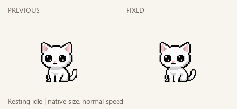

A steadier little companion.
Previous refresh on the left; corrected rest or restored original gesture on the right. Native size and normal speed. Rest keeps a fixed body with a quick300ms blink. Left/right looks and lazy tail swish return to their original drawings and cadence.

Comparisons repeat for review. The other refreshed gestures remain unchanged; tail chase and catch remain protected.
Checks and remaining limits